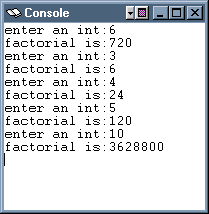

An optimizing compiler
might output assembly code that
eliminates the intermediate variable a,
as if the programmer had written:
main()
{
print( mysub( 6 ) );
}

# main()
# {
# int a, b; // a: 0($fp), b: 4($fp)
# write("enter an int:")
# read( a );
# b = fact( a );
# write("factorial is:")
# print( b );
# }
# int fact( int n )
# {
# if ( n <= 1 )
# return 1;
# else
# return n*fact(n-1);
# }
The rest of the chapter describes how recursion is implemented using stack frames. High level languages like C use frames to store the values for each step of a recursive computation.
It would be OK to skip to the next chapter at this point.
This example program prompts the user for an integer, reads in the integer, and prints the factorial. The SPIM console window shows the output of several runs of the program.
The math definition of factorial is:
fact( n ) = 1, if n <= 1
= n * fact( n-1 ),
otherwise
The program shows this in pseudo-code.